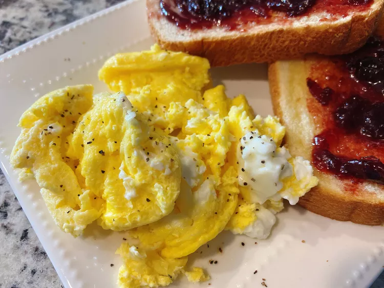

Air Fryer Scrambled Eggs

Ingredients
- Butter
- Eggs
- Salt and pepper
How to make it
- Preheat the air fryer to 300 degrees F (150 degrees C). Place silicone liner into the air fryer basket and set butter on top.
- Allow butter to melt, 1 to 2 minutes. Increase heat to 310 degrees F (154 degrees C).
- Meanwhile, combine eggs and salt in a bowl and whisk until well combined. Pour egg mixture into silicone liner.
- Cook eggs for 2 minutes. Stir the eggs with a spatula and continue cooking until eggs are set to your liking, 4 to 5 minutes. Sprinkle with pepper before serving.